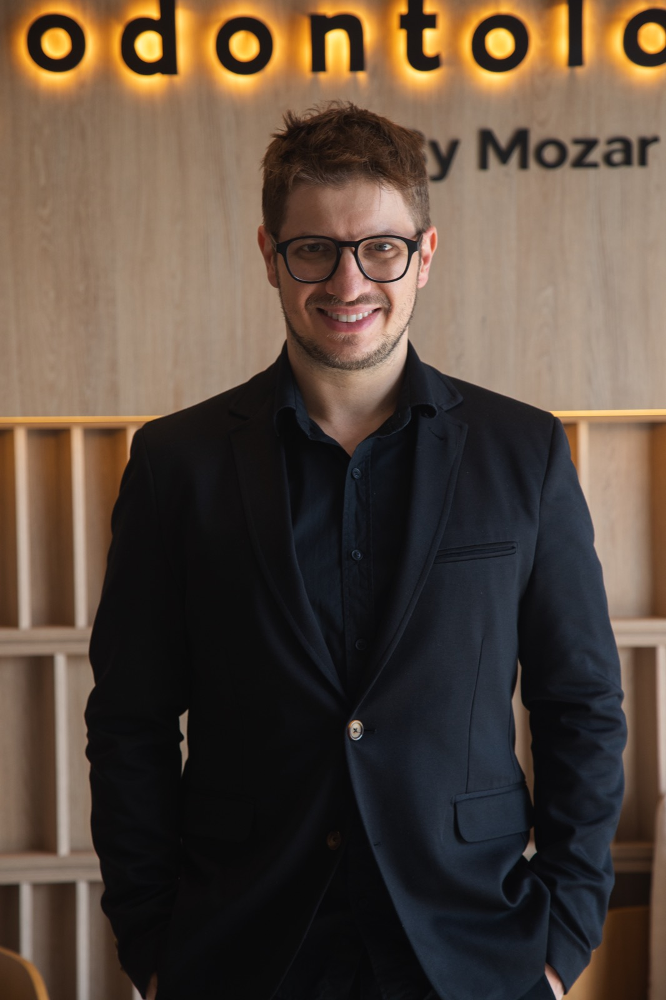
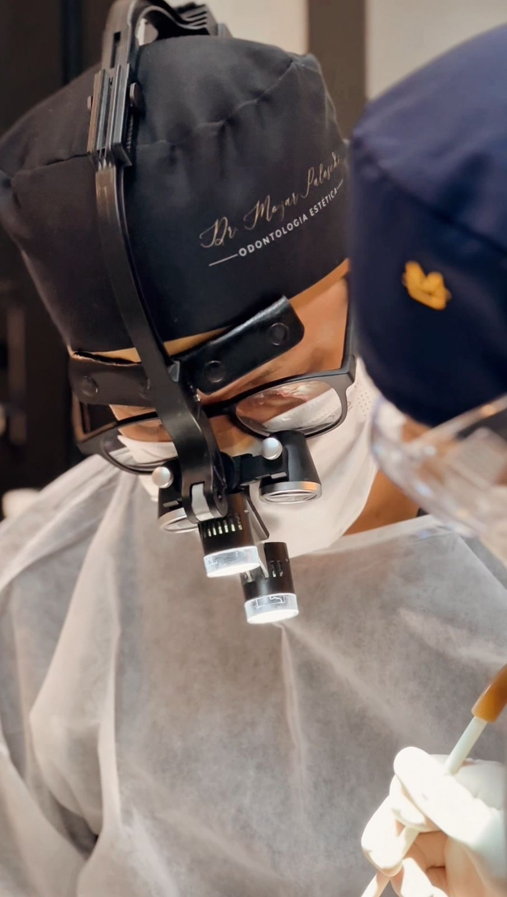
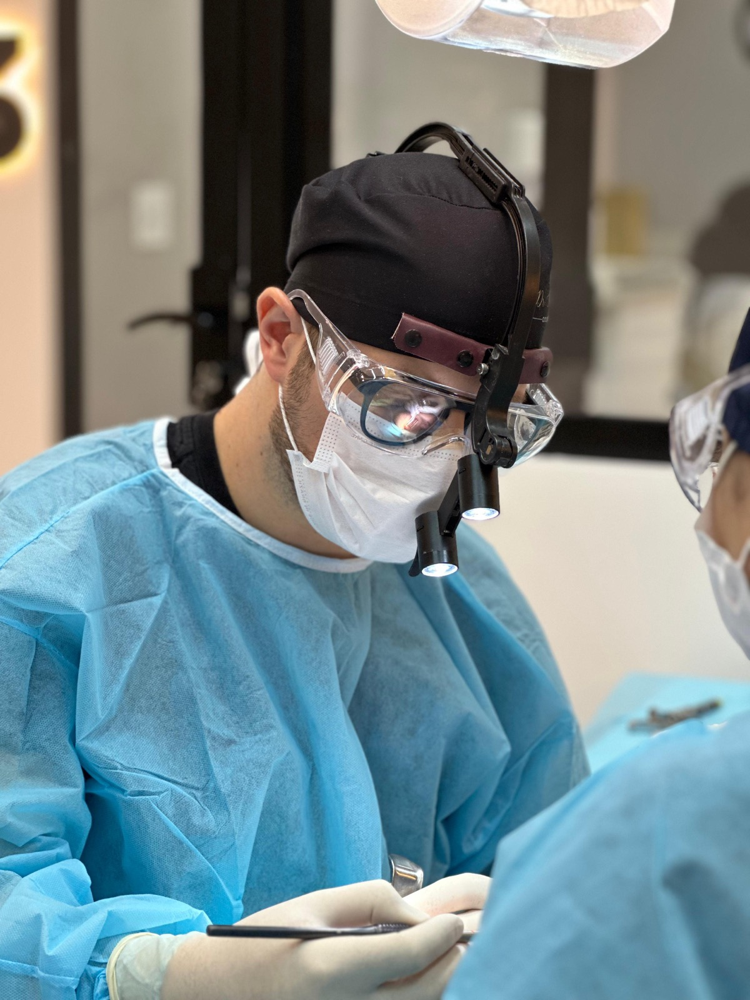
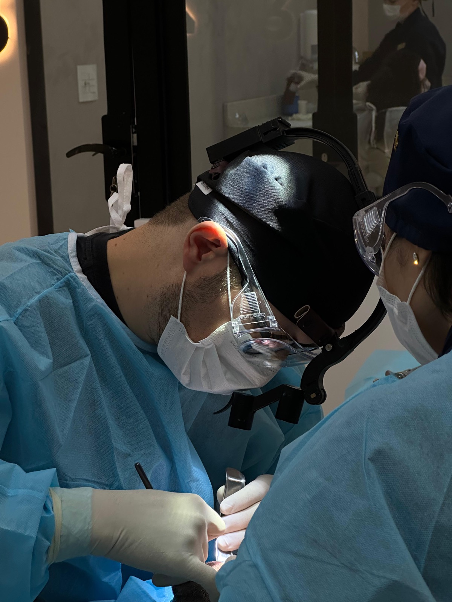
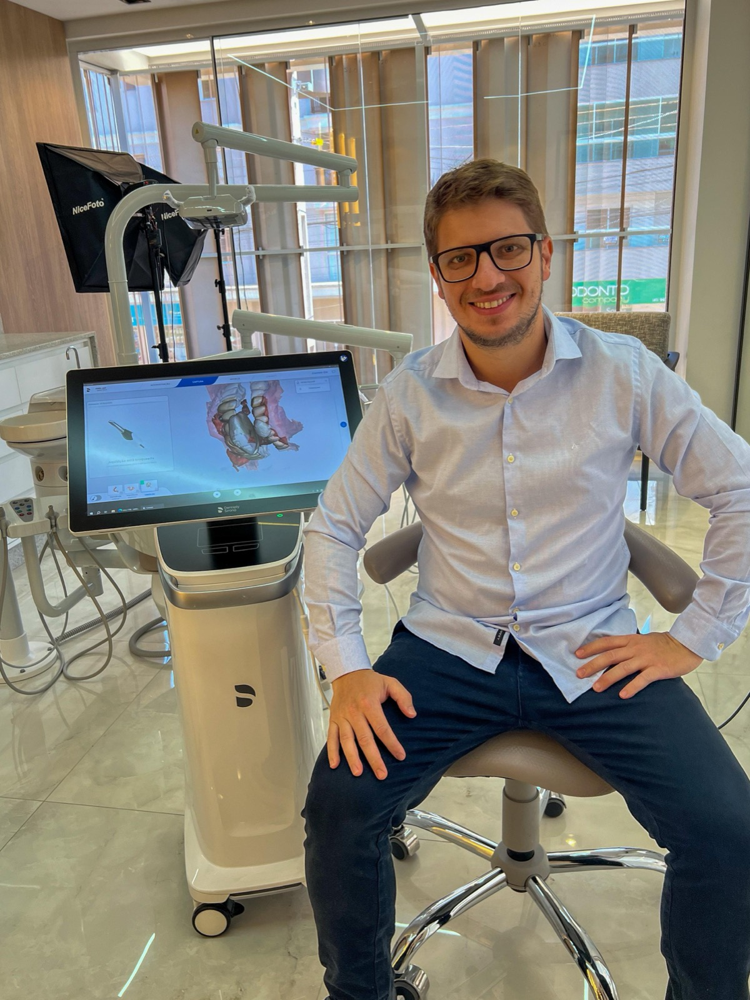

Lentes em cerâmica, implantes e reabilitação oral com tecnologia alemã, laboratório próprio e resultado em 48 horas.
Da avaliação ao resultado final, cada tratamento é planejado com escaneamento 3D, design digital e produzido no nosso laboratório interno — sem depender de terceiros, sem demora.
Transformação completa do sorriso com lâminas ultrafinas de porcelana — naturais e duradouras.
Reabilitações com implantes tradicionais e em zircônio para máximo padrão de estética e longevidade.
Devolvemos os dentes como deveriam ser, com projeto digital completo do sorriso.
A OTA especializa-se em corrigir estética insatisfatória ou mordida desalinhada anterior.
Clareamento de alta performance com protocolo personalizado para resultado natural e duradouro.
Saber mais
Muitos pacientes chegam até nós depois de anos evitando sorrir em fotos, cobrindo a boca ao falar ou convivendo com um sorriso que nunca foi o que deveria ser.
Outros chegam depois de tratamentos frustrados — lentes mal-feitas, implantes dolorosos, próteses que não se encaixam. E descobrem que isso tem solução.
Se você se identifica com alguma das situações ao lado, a OTA foi construída especialmente para você.
Dentes escurecidos, irregulares ou espaçados que fazem você esconder o sorriso toda vez que a câmera aparece.
Cor artificial, tamanho errado, sorriso "postiço". O resultado não parecia seu — e você ficou preso nele sem saber que dá para refazer.
Bruxismo, apertamento ou tratamentos anteriores mal-feitos foram corroendo seu esmalte.
O problema não é o dinheiro que você gastou antes. O problema é continuar convivendo com algo que pode — e deve — ser resolvido.

CRO 21106/PR · Prótese & Implantodontia
"Aqui na OTA, cada sorriso é tratado como um projeto. Fazemos o planejamento completo antes de tocar no dente — e o resultado é o que nos mantém motivados há 15 anos."
Especialista em prótese dentária e implantodontia, o Dr. Mozar Paloschi construiu a OTA — Clínica de Alta Tecnologia — com um objetivo claro: entregar resultados que outros consultórios simplesmente não conseguem.
Hoje, além de clínico, o Dr. Mozar é mentor de outros dentistas — reconhecido não só pelo resultado dos pacientes, mas pela abordagem que coloca tecnologia e planejamento acima de qualquer atalho.
Eu tinha feito lentes em outro lugar e odiava o resultado. Parecia que eu tinha dentes postiços. Fiz o retratamento na OTA e pela primeira vez na vida gostei de sorrir em foto.
Retratamento · Lentes
Perdi três dentes por conta do bruxismo. Fiz a reabilitação completa com o Dr. Mozar. A mordida ficou diferente — do jeito que deveria ter sido sempre. Não sinto mais dor.
Reabilitação Total
Saí no mesmo dia com o projeto do sorriso aprovado. Em 48 horas estava com as lentes. A tecnologia deles é diferente — você vê o resultado antes mesmo de começar.
Lentes em Cerâmica




Na primeira consulta, o Dr. Mozar faz o diagnóstico completo com scanner 3D e já apresenta as possibilidades para o seu caso. Sem compromisso, sem pressão — só clareza.